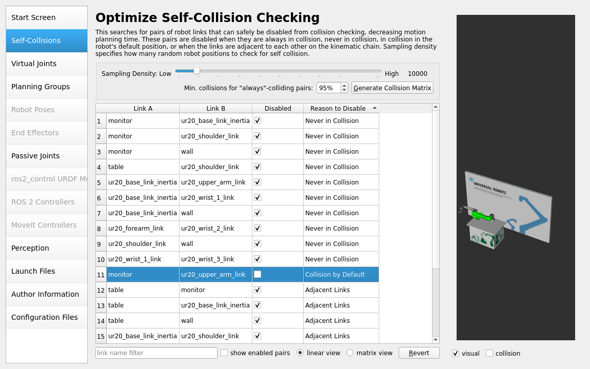
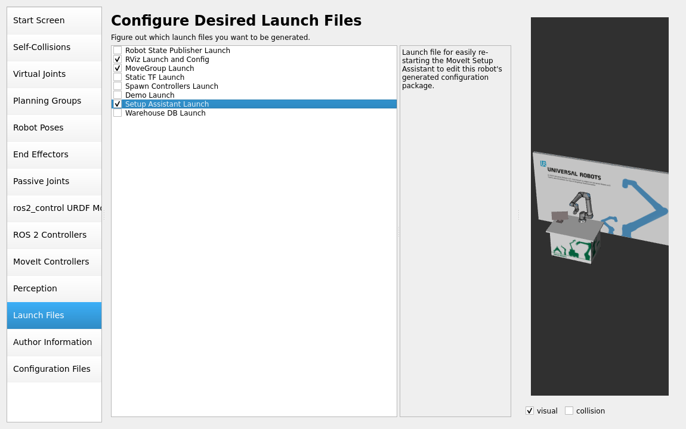

Build the MoveIt! config
At this point, you should be able to run the ur_robot_driver for your custom UR setup.
Now, we are only one last step away from actually planning and executing trajectories.
To utilize MoveIt! 2 for this purpose, which will handle trajectory planning for us, we need to set up a MoveIt! configuration package. To create such a MoveIt! configuration package, MoveIt! provides a very useful Setup Assistant.
Setup Assistant
We can start the MoveIt! Setup Assistant by running:
ros2 launch moveit_setup_assistant setup_assistant.launch.py
Please note that MoveIt! itself provides a detailed tutorial on how to use the Setup Assistant, so you may want to go through that. Although the Setup Assistant is very straightforward, there are some tips and tricks we want to discuss in the following sections.
The first task the MoveIt! Setup Assistant asks us to do is to load the URDF with the optional xacro arguments. If you would like to change the ur_type for example, you could also specify that here. For this demonstration we’ll go with our description’s default values.

Next, make sure that the generated self-collisions are detected correctly. In our example the robot is positioned on the table in such a way, that it collides with the monitor on the table when all joints are in the 0 position. Hence, the collision is allowed as “Collision by default”. We remove that tick, since we don’t want that collision to be ignored.
We skip adding virtual joints for now and continue with our planning group(s). We add a planning group called ur_arm. A reasonable and error-resistant approach is to define it as a kinematic chain in the following manner:


Your planning groups should look something like this:

We’ll skip setting up ros2_control related points, since we’ve already configured that in our control package.
In the MoveIt Controllers step we setup our desired controller to match the name “scaled_joint_trajectory_controller”:

We skip perception as we don’t have any cameras setup in our scenario.
In the next step we modify the launch files being generated by the assistant. We only generate “RViz Launch and Config”, “MoveGroup Launch” and “Setup Assistant Launch”. The other launch files are for starting a demo using mock hardware, which would basically be a duplication of what we already did in our control package. Since we also do not use the Warehouse feature for now, we also skip that file.
After the Author information we select which configuration files to generate. Again, we strip down all the files needed for mock hardware startup.
With all the information entered, you can generate the package and close the setup assistant.
Manual adaptions
Before we can actually use our package we have to adapt the joint limits. Since MoveIt! requires
joint acceleration limits to be specified but the description doesn’t contain those, we need to
specify these inside the generated config/joint_limits.yaml file.
They are not part of the arm’s description since there are no physical acceleration limits, as
those are highly dependent on the robot’s current pose and TCP force (e.g. induced by the weight
carried at the TCP). Setting the acceleration limits to 5.0 for all joints should be a
conservative value. Higher values might lead to unwanted slowdowns during execution or even
protective stops, while lower values will result in slower motions due to slow ramp-up and
ramp-down parts of the trajectory.
1# joint_limits.yaml allows the dynamics properties specified in the URDF to be overwritten or augmented as needed
2
3# For beginners, we downscale velocity and acceleration limits.
4# You can always specify higher scaling factors (<= 1.0) in your motion requests. # Increase the values below to 1.0 to always move at maximum speed.
5default_velocity_scaling_factor: 0.1
6default_acceleration_scaling_factor: 0.1
7
8# Specific joint properties can be changed with the keys [max_position, min_position, max_velocity, max_acceleration]
9# Joint limits can be turned off with [has_velocity_limits, has_acceleration_limits]
10joint_limits:
11 ur20_elbow_joint:
12 has_acceleration_limits: true
13 max_acceleration: 5.0
14 ur20_shoulder_lift_joint:
15 has_acceleration_limits: true
16 max_acceleration: 5.0
17 ur20_shoulder_pan_joint:
18 has_acceleration_limits: true
19 max_acceleration: 5.0
20 ur20_wrist_1_joint:
21 has_acceleration_limits: true
22 max_acceleration: 5.0
23 ur20_wrist_2_joint:
24 has_acceleration_limits: true
25 max_acceleration: 5.0
26 ur20_wrist_3_joint:
27 has_acceleration_limits: true
28 max_acceleration: 5.0
Please note that you could also change the default velocity and acceleration scaling in this file. Also, if you want to specify any limits (position or velocity) that differ from your description, you can set them here. Remember that does will only be used for planning trajectories, not necessarily for execution. If you send trajectories from another source than MoveIt! those limits will not apply!
Usage
Before we can test our code, it’s essential to build and source our Colcon workspace:
#cd to your colcon workspace root
cd ~/colcon_ws
#source and build your workspace
colcon build
source install/setup.bash
Now you are ready to use MoveIt! with an actual ur20, MoveIt! itself also provides you with the opportunity to start a robot with mock hardware.
To startup the complete system, you’ll have to start three launch files in three individual terminals.
First, we need to start a robot, simulated or real. If you start a real robot, make sure that the external_control program is active on the robot.
# You can switch to real hardware if you prefer
ros2 launch my_robot_cell_control start_robot.launch.py use_mock_hardware:=true
Second, we can start the move_group node by running the launch file the setup assistant created for us:
ros2 launch my_robot_cell_moveit_config move_group.launch.py
If everything went well you should see the output: “You can start planning now!”.
To interact with the MoveIt! setup, you can start RViz with the correct setup file:
ros2 launch my_robot_cell_moveit_config moveit_rviz.launch.py
From that setup you can start developing your application involving a custom move_group interface or similar. Please refer to the MoveIt! documentation for further reading.